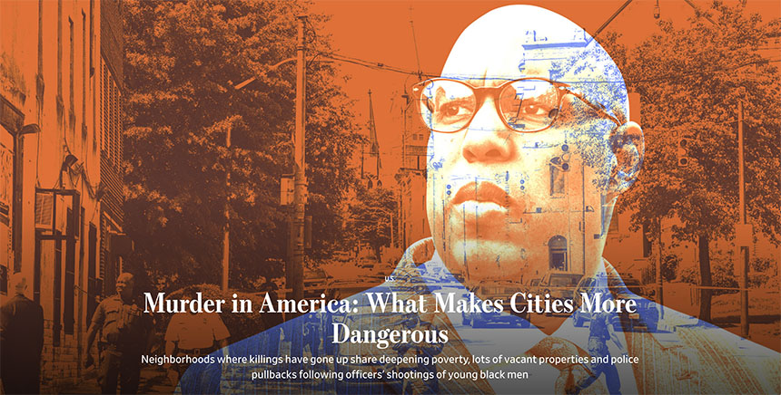
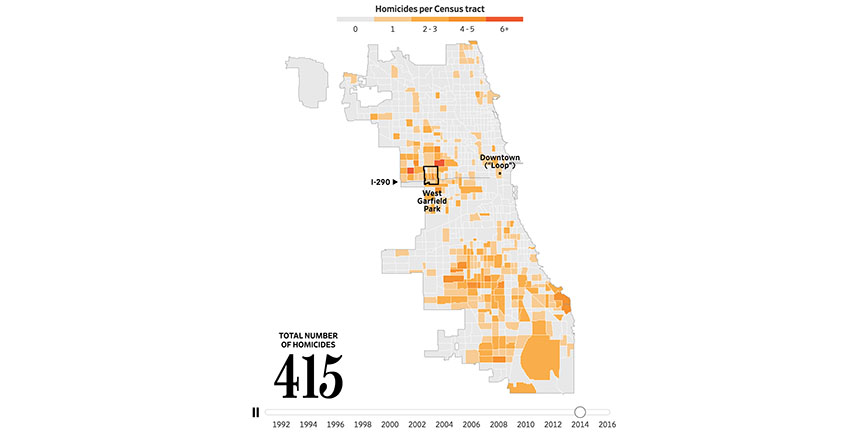

Murder in America is deeply local. Homicides in the U.S. rose about 9% last year, according to the Federal Bureau of Investigation, and more than one-third of the increase was concentrated in neighborhoods where just one-third of Chicago residents live. Meanwhile, improvements in areas where 30% of Los Angeles residents live accounted for one quarter of the 13% drop in U.S. murders between 2002 and 2014.
 